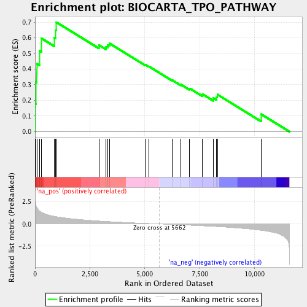

| | | Dataset | RG_PDR_nPDR |
| Phenotype | NoPhenotypeAvailable |
| Upregulated in class | na_pos |
| GeneSet | BIOCARTA_TPO_PATHWAY |
| Enrichment Score (ES) | 0.70047605 |
| Normalized Enrichment Score (NES) | 2.0595937 |
| Nominal p-value | 0.0 |
| FDR q-value | 0.016438115 |
| FWER p-Value | 0.074 |
Table: GSEA Results Summary

Fig 1: Enrichment plot: BIOCARTA_TPO_PATHWAY
Profile of the Running ES Score & Positions of GeneSet Members on the Rank Ordered List
| PROBE | GENE SYMBOL | GENE_TITLE | RANK IN GENE LIST | RANK METRIC SCORE | RUNNING ES | CORE ENRICHMENT | | 1 | CSNK2A1 | | | 10 | 2.786 | 0.1771 | Yes |
| 2 | PRKCA | | | 34 | 2.245 | 0.3186 | Yes |
| 3 | GRB2 | | | 81 | 1.865 | 0.4337 | Yes |
| 4 | SOS1 | | | 199 | 1.483 | 0.5183 | Yes |
| 5 | STAT5A | | | 284 | 1.353 | 0.5974 | Yes |
| 6 | PLCG1 | | | 874 | 0.869 | 0.6020 | Yes |
| 7 | SHC1 | | | 942 | 0.836 | 0.6495 | Yes |
| 8 | RAF1 | | | 964 | 0.826 | 0.7005 | Yes |
| 9 | PIK3CG | | | 2907 | 0.333 | 0.5537 | No |
| 10 | MAP2K1 | | | 3236 | 0.282 | 0.5434 | No |
| 11 | STAT3 | | | 3319 | 0.270 | 0.5535 | No |
| 12 | MAPK3 | | | 3385 | 0.262 | 0.5647 | No |
| 13 | PIK3R1 | | | 5016 | 0.069 | 0.4280 | No |
| 14 | JAK2 | | | 5175 | 0.051 | 0.4176 | No |
| 15 | PIK3CA | | | 6245 | -0.059 | 0.3289 | No |
| 16 | RASA1 | | | 6632 | -0.101 | 0.3019 | No |
| 17 | STAT1 | | | 7039 | -0.148 | 0.2762 | No |
| 18 | FOS | | | 7628 | -0.216 | 0.2392 | No |
| 19 | STAT5B | | | 8124 | -0.278 | 0.2141 | No |
| 20 | HRAS | | | 8261 | -0.296 | 0.2212 | No |
| 21 | JUN | | | 8300 | -0.301 | 0.2372 | No |
| 22 | PRKCB | | | 10291 | -0.726 | 0.1114 | No |
Table: GSEA details [plain text format]
Fig 2: BIOCARTA_TPO_PATHWAY: Random ES distribution
Gene set null distribution of ES for BIOCARTA_TPO_PATHWAY